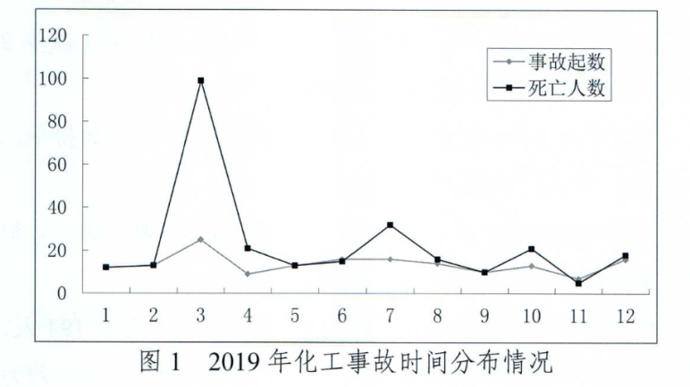
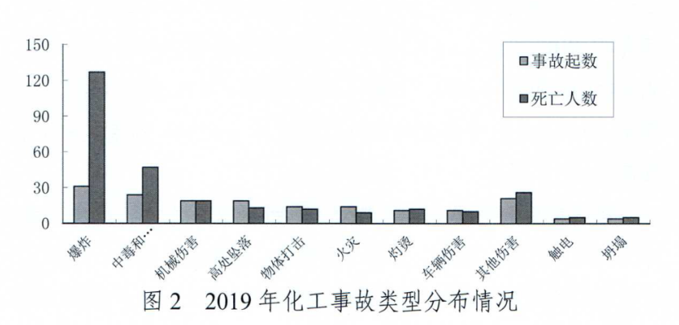
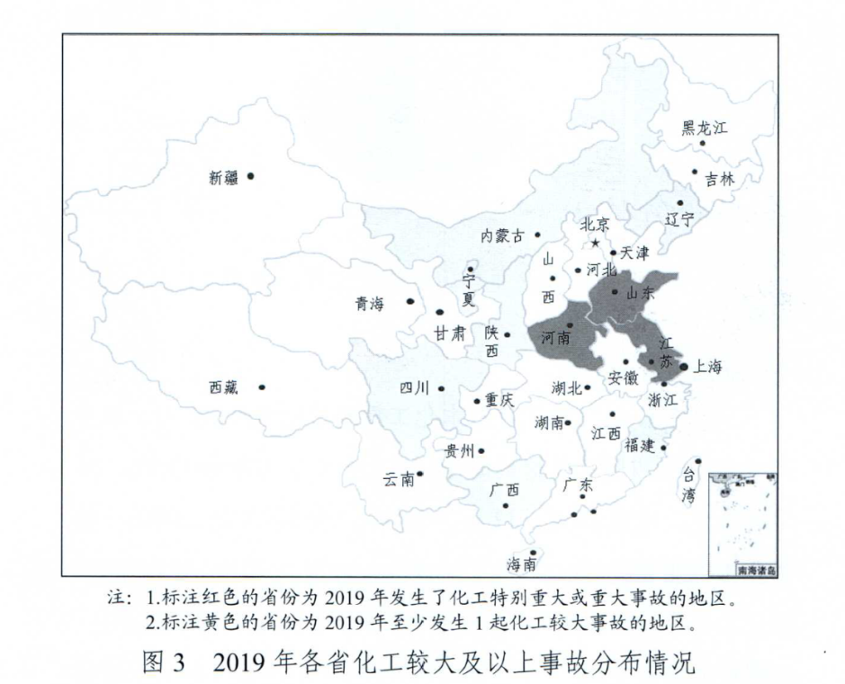
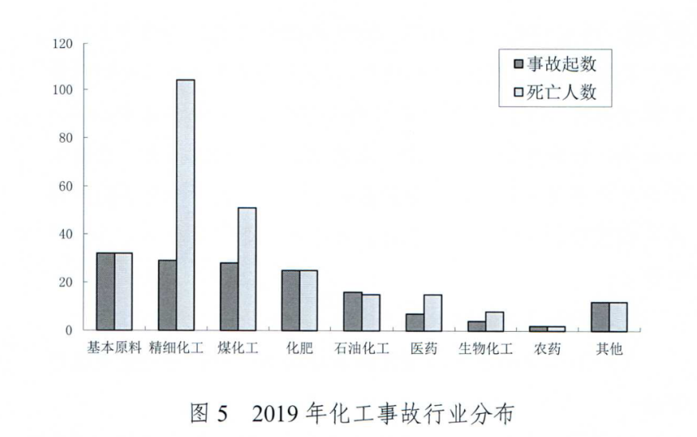

2019年全国化工事故分析报告
2019年，被称为化工行业的本命年。化工事故层出不穷，发生了三起重特大事故，而环保督查愈趋严格。2019全年发生了多少起事故？有多少人因此家毁人亡？今天为大家带来2019年全国化工事故分析报告。针对化工行业出现的安全问题，望以此为鉴，继续深化化工和危险化学品安全综合治理。
一、事故基本情况
2019年全国共发生化工事故164起、死亡274人，同比(176起、223人）事故起数减少12起、下降6.8%，死亡人数增加51人，上升22.9%。其中一般事故152起、死亡136人，同比(163起、134人）起数减少11起、下降6.7%，人数增加2人、上升1.5%。较大事故9起、死亡35人，同比(11起、46人）减少2起、11人，分别下降18.2％和23.9%。重大事故2起、死亡25人，同比(2起、43人）起数持平，人数减少18人，同比下降41.9%。特别重大事故1起、死亡78人，同比增加1起、78人，均上升100%。
化工事故中涉及危险化学品的事故为77起、死亡194人，分别占化工事故的47.0％和70.8%， 13起较大及以上事故均为危险化学品事故。
2019年全国化工事故总起数、较大及以上事故起数同比下降，但发生3起重特大事故，且自2017年以来连续三年发生2起以上重特大事故，安全生产形势依然严峻。
二、事故分布情况
（一）时间分布
2019年化工事故的高发时段是3月、6-7月和12月，共发生事故73起、死亡164人，分别占全年的44.5％和59.9%。气候因素和化工企业周期性的检维修、复工复产活动共同作用，导致岁末年初和高温季节历来是化工事故的多发期，但2019年3月发生25起化工事故，明显超出往年水平(2018年3月为6起、2020年3月为12起），分析除偶然因素外，可能是部分停产企业受春节假期及“两会”召开影响于3月中下旬集中复工复产导致。说明夏季和岁末年初两个时段依然是防范事故，特别是重特大事故的重点时段。

（二）类型分布
爆炸事故31起、死亡127人，分别占18.9％和46.2%；中毒和窒息事故24起、47人，分别占14.6％和17.1%；机械伤害事故19起、死亡19人，分别占11.6％和6.9%；高处坠落事故19起、死亡13人，分别占11.6％和4.7%；物体打击事故14起、死亡12人，分别占8.5％和4.4%；火灾事故14起、死亡9人，分别占8.5％和3.3%；灼烫事故11起、死亡12人，分别占6.7%和4.4%；车辆伤害事故11起、死亡10人，分别占6.7％和3.6%；其他伤害事故13起、死亡16人，分别占7.9％和5.8%；触电事故4起、死亡5人，分别占2.4％和1.8%；塌事故4起、死亡5人，分别占2.4％和1.8%；淹溺事故2起、死亡2人，分别占1.2％和0.7%；起重伤害事故1起、死亡1人，分别占0.6％和0.4%。

从事故类型的分布情况看，事故起数和死亡人数均是 爆炸事故最多，其次是中毒和窒息、机械伤害事故、高处坠落事故，四类事故共计占到全年总事故起数和死亡总人数的56.7%、74.9%。因此，爆炸、中毒和窒息、机械伤害、高处坠落是化工事故的防范重点。
（三）地区分布
1.事故总量居前列的省份是山东(15起）、辽宁(13起）、山西(9起）、四川(9起）、江苏(8起）、河南(8起）、宁夏(8起）、黑龙江(8起）、安徽(8起）、甘肃(8起）、广东(8起）、湖北(7起）、广西(7起）、青海(7起），共占2019年事故总起数的75%。死亡人数居前列的省份是江苏(90人）、河南(21人）、辽宁(17人）、山东(16人）、四川(10人）、宁夏(10人），共占2019年死亡总人数的68.7%。
2019年全国有14个统计单位事故起数同比下降，7个同比持平，11个同比上升，事故起数下降数量排在前七位的是山东(-9)、江苏（-5)、江西（-5)、宁夏（-3)、陕西（-3)、浙江(-3)，上升数量排在前五位的是广东(+6)、重庆(+4)、青海(+4)、河南(+4)、广西（+4)。死亡人数下降数量排在前六位的是河北(-33)、四川(-12)、上海(-8)、新疆(-8)、浙江(-6)、江西(-5)，上升数量排在前五位的是江苏(+75)、河南(+15)、陕西(+8)、福建（+5)、青海(+5)。
化工事故起数和死亡人数双上升的地区是广东、重庆、青海、河南、广西、福建、甘肃、黑龙江、内蒙古、陕西、辽宁，双下降的是江西、浙江、河北、天津、吉林、上海、贵州、安徽、湖南、新疆兵团。
2.2019年共有10个地区发生了较大及以上事故，同比持平。其中江苏发生1起特别重大事故和1起较大事故、共计81人死亡，分别占较大及以上事故起数和死亡人数的16.7%、58.7%，河南发生1起重大事故、15人死亡，山东发生1起重大事故、10人死亡，陕西发生2起较大事故、11人死亡，宁夏、内蒙古、广西、辽宁、福建、四川各发生1起较大事故。
全国连续四年(2016年至2019年）发生较大及以上事故的地区是山东(8起、45人）和四川(4起、28人）；连续三年(2017年至2019年）发生较大及以上事故的地区是辽宁(3起、9人）、江苏(4起、94人）、河南(3起、22人）。

（四）企业规模分布
从规模来看，2019年发生事故的企业中有大型企业42家（包括12家中央企业所属企业），占事故企业总数的25.6%；中型企业43家，占事故企业总数的26.2%；小型企业79家，占事故企业总数的48.2%。中小型企业发生的事故比例共占全国的74.4%。
（五）行业分布
从行业来看，2019年基本化工原料行业事故32起、死亡32人，分别占事故总起数的19.5％和死亡总人数的11.7%，其中有机化工原料15起、13人，无机化工原料17起、19人；精细化工行业事故29起、死亡104人，分别占17.7％和38.0%；煤化工行业发生事故28起、死亡51人，分别占17.1％和18.6%；化肥行业事故25起、死亡25人，分别占15.2％和9.1%；石油化工行业事故16起、死亡15人，分别占9.8％和5.5%；医药行业事故7起、死亡15人，分别占4.3％和5.5%；生物化工事故4起、死亡8人，分别占2.4％和2.9%，农药行业事故2起、死亡2人，分别占1.2％和0.7%；其他事故12起、死亡12人，分别占7.3％和4.4%。化工子行业中基础化工原料、精细化工、煤化工、化肥、石油化工发生的事故居前五位，是化工事故防范的重点行业。

（六）中央企业事故情况
2019年共有中国石油天然气集团有限公司、中国石油化工集团有限公司、中国海洋石油集团有限公司、中国兵器工业集团有限公司、国家能源投资集团有限责任公司、中粮集团有限公司6家中央企业所属企业发生13起化工事故、死亡12人，占全年事故起数和死亡人数的7.9%、4.4%，同比(13起、38人）起数持平，死亡人数减少26人。其中，中国石油化工集团有限公司发生事故7起、死亡7人，中国石油天然气集团有限公司发生事故2起、死亡2人，其他各发生1起、死亡1人。
（七）特殊作业环节事故情况
从事故发生环节来看，2019年较大及以上事故中涉及动火和进入受限空间作业的事故为4起，占较大及以上事故起数的30.8%，同比持平，比2017、2018年减少2起。特殊作业发生较大及以上事故的比例仍然较高，从4起事故企业所属的行业和规模来看，1起属于医药行业的大型企业，其他3起均为中小型企业，分别属于工业气体、生物化工和煤化工行业，说明近年来持续开展的特殊作业整治取得了一定成效，但整治仍需要进一步深化，对所有化工子行业和中小企业都做到全覆盖、严监管。
三、典型事故案例
（一）江苏响水天嘉宜化工有限公司“3·21“特别重大爆炸事故
2019年3月21日，位于江苏省盐城市响水县生态化工园区的天嘉宜化工有限公司发生特别重大爆炸事故，造成78人死亡、76人重伤，640人住院治疗，直接经济损失19.86亿元。
事故直接原因是：天嘉宜公司旧固废库内长期违法贮存的硝化废料持续积热升温导致自燃，燃烧引发硝化废料爆炸。事故暴露出的突出问题：一是天嘉宜公司无视国家环境保护和安全生产法律法规，刻意瞒报、违法贮存、违法处置硝化废料，安全环保管理混乱，日常检查弄虚作假，固废仓库等工程未批先建。二是相关环评、安评等中介服务机构严重违法违规，出具虚假失实评价报告。三是江苏省各级应急管理部门履行安全生产综合监管职责不到位，生态环境部门未认真履行危险废物监管职责，工信、市场监管、规划、住建和消防等部门也不同程度存在违规行为。四是响水县和生态化工园区招商引资安全环保把关不严，对天嘉宜公司长期存在的重大风险隐患视而不见，复产把关流于形式。五是江苏省、盐城市未认真落实地方党政领导干部安全生产责任制，重大安全风险排查管控不全面、不深入、不扎实。
（二）济南齐鲁天和惠世制药有限公司“4·15”重大着火中毒事故
2019年4月15日15时10分左右，位于济南市历城区董家镇的齐鲁天和惠世制药有限公司四车间地下室，在冷媒系统管道改造过程中，发生重大着火中毒事故，造成10人死亡、12人受伤、直接经济损失1867万元。
事故直接原因是：天和公司四车间地下室管道改造作业过程中，违规进行动火作业，电焊或切割产生的焊渣或火花引燃现场的堆放的冷媒增效剂（主要成份为氧化剂亚硝酸钠，有机物苯并三氮唑、苯甲酸钠），瞬间产生爆燃，放出大量氮氧化物等有毒气体，造成现场施工和监护人员中毒窒息死亡。
事故暴露出的突出问题：一是天和公司未深刻吸取事故教训，安全生产主体责任不落实，动火作业和进入受限空间作业管理不到位，对采购的冷媒增效剂危险性不了解，技术改造未制定规范的施工方案和安全作业方案，外来承包施工队伍安全生产条件和资质审查不严格，事故应急处置能力不足。二是技改项目承包商信邦公司安全教育培训不到位，对外派项目部管理严重缺位，施工人员违反《化学品生产单位特殊作业安全规范》(GB 30871-2014)要求，在未对可燃易燃物采取移除或隔离防护措施的情况下动火作业。三是冷媒增效剂供应商光达公司非法生产、销售危险化学品。四是地方党委、政府及相关部门未依法认真履行安全生产监管职责。
（三）三门峡市河南省煤气（集团）有限责任公司义马气化厂“7·19”重大爆炸事故
2019年7月19日17时43分许，三门峡市河南省煤气（集团）有限责任公司义马气化厂空分装置发生重大爆炸事故，共造成15人死亡、16人重伤、175人轻伤，直接经济损失8170万元。
事故直接原因是：空分装置冷箱内发生泄漏，直至冷箱板出现裂纹，事故企业未及时处置，富氧液体泄漏至珠光砂中，使碳钢材质的冷箱构件在低温和压力增高的共同作用下裂纹扩大，直至冷箱失稳坍塌，砸裂东侧500m3液氧贮槽，贮槽内大量液氧迅速外泄气化，高纯氧遇可燃物发生爆炸，并引发冷箱中的铝质填料（厚度0.15mm)等殉爆。
事故暴露出的突出问题：一是义马气化厂未按照技术操作规程要求，发现冷箱裂纹后及时停车检修；备用空分设备未按企业制度要求做好性能考核和日常维护，需要投用时无法及时启动；按企业制度要求，义马气化厂空分装置隐患扩大后本应立即停车检修，但是层层请示汇报贻误检修时机。二是河南省煤气（集团）有限责任公司作为义马气化厂的上级单位，接到义马气化厂的事故隐患报告后，未按照企业制度要求督促义马气化厂及时停车检修消除隐患，而是要求义马气化厂提交书面请示，逐级上报至河南能源化工集团同意后再停车。三是河南能源化工集团有限公司作为河南省煤气（集团）有限责任公司和义马气化厂的上级单位，安全红线意识不强，安全管理和制度建设有漏洞，决策效率低下，接到空分装置出现泄漏的报告后，未立即要求义马气化厂对空分装置停车检修。
四、事故原因分析
2019年，各地区、各企业、各单位深入贯彻习近平总书记关于安全生产的重要批示指示精神和党中央、国务院决策部署，认真落实应急管理部党组关于化工和危险化学品安全生产的各项工作要求，将管控危险化学品重大风险作为重中之重，多措并举防范遏制化工事故，事故总数继续保持下降趋势，但接连发生3起重特大事故，为近年来重特大事故最多的一年，特别是江苏响水“3·21”特别重大爆炸事故，导致重大人员伤亡和财产损失，教训极为深刻，反映出化工和危险化学品安全生产形势依然严峻。原因主要有以下几个方面：
（一）企业层面
一是企业安全生产主体责任落实不到位。部分企业法制观念淡薄，违法违规行为依然存在；重效益轻安全，安全管理制度不健全不落实，安全投入不足，教育培训不到位，自动化控制水平低，应急能力严重不足，本质安全水平低。二是化工企业从业人员素质能力无法满足安全生产要求。我国化工企业主要负责人具有化工专业学历的比例较低，安全管理人员和操作工人技能素质不能满足安全生产的需要，部分企业大量使用不具备化工专业知识的人员，特种作业人员无证上岗或不满足高中以上学历的现象在精细化工企业较为普遍。三是化工产业快速发展。近年来随着东部地区产业结构调整、安全环保政策收紧，部分企业向中西部地区转移，同时西部地区资源型化工企业发展较快，使中西部地区的安全生产压力增大。同时，大量新工艺新业态不断涌现，装置和储存设施大型化已成常态，给化工和危险化学品安全生产带来了新的问题和挑战。四是化工行业安全生产基础依然薄弱。尽管我国化工行业总体规模和产值巳跃居世界首位，但大而不强，多数细分行业集中度低，中小企业中“小、散、乱”企业数量多，安全生产水平低。
（二）政府层面
一是部分基层党委政府安全发展理念不牢，红线意识不强，项目准入把关不严，盲目发展高风险的化工产业；防范化解危险化学品领域重大安全风险的措施不深入不具体；存在为违法企业说情开绿灯、于扰执法的行为。二是危险化学品安全监管职责落实不到位。各有关监管部门对“三管三必须“理解不一致、落实不到位，特别是危险化学品使用、废弃处置环节的监管职责落实参差不齐。三是危险化学品专业监管力量短缺，日常监管“宽、松、软”，监管效率低效果差，企业违法成本低，因而缺乏落实安全生产主体责任的内生动力。四是化工行业粗放式增长模式下的安全风险持续叠加。化工行业缺乏科学合理的总体规划，化工园区随意设立，行业准入门槛低，部分企业长期透支安全等成本，维持低成本竟争，淘汰低端落后产能落实不到位。
五、2020年安全生产形势预判及对策
（一）安全生产形势预判
2020年，我国经济社会面临多重严峻考验，疫情防控虽然取得阶段性成效，但国际疫情持续蔓延，世界经济下行风险加剧，不稳定不确定性因素显著增多；全世界“逆全球化”趋势明显，贸易战等外部因素仍有可能对我国造成外部冲击；国际油价急剧下跌，对我国石油化工行业的影响仍有待进一步观察。这些因素从各方面对我国化工行业产生影响，对化工和危险化学品安全生产既有有利的因素，也有不利的因素。同时，制约我国化工和危险化学品安全发展的深层次矛盾仍然比较突出，涉及重大危险源、重点监管的危险化工工艺的地区、企业发生重特大事故的 可能性依然存在，安全生产形势严峻复杂。一是今年以来，受化工产品需求端不振影响，化工行业整体利润率持续下降，部分企业经营困难，可能会采取缩减安全投入、延迟设备检维修等方式节省开支，带来安全隐患。根据国家统计局数据显示，2019年我国石油和化工行业规模以上企业26271家，主营业务收入12.27万亿元，同比增长1.3%；利润总额6683.7亿元，同比下降14.9%。中国石油和化学工业联合会预测，2020年石油和化工行业营业收入同比增长5％左右，利润总额同比增长8％左右。二是部分重点省份安全生产压力仍然较大。山东、江苏、浙江、辽宁、广东等地区化工和危险化学品企业数量较多，重大危险源、重点监管工艺等风险点多面广)加之前些年立项新建的2000万吨级炼化企业陆续投入试生产或正式运营，风险较大，事故防范任务重。三是东部地区产业结构调整仍在进行，部分化工企业受安全环保政策收紧影响向中西部地区转移，同时西部地区资源型化工企业发展较快，使中西部地区的安全生产压力增大。四是占企业数量较大比重的中小型化工企业技术力量相对薄弱，安全管理和操作技能人才短缺，且企业主要负责人和管理人员安全生产意识淡薄，安全管理水平不高，风险辨识与管控、人员培训、承包商管理、变更管理、特殊作业管理等重点环节依然薄弱，安全保障能力差，易发生事故。五是部分地区安全发展理念不牢，防范化解重大风险意识不强，监管部门监管力量和能力不足，属地监管责任落实不到位，化工人才短缺，但盲目引进发展化工产业。
（二）主要对策
1.推动牢固树立安全发展理念
督促地方深入学习贯彻落实习近平总书记关于安全生产重要论述精神和中办、国办印发的《关于全面加强危险化学品安全生产工作的意见》、《<关于全面加强危险化学品安全生产的意见>重点工作落实方案》，牢固树立安全发展理念，严把发展规划、招商引资、项目建设的安全关，制定出台新建化工项目准入条件，严禁已淘汰落后产能异地落户、办厂进园；建立发展改革、工业和信息化、自然资源、生态环境、住房城乡建设和应急管理等部门参与的化工产业发展规划编制协调沟通机制。
2.持续防范化解化工重大安全风险
一是认真落实危险化学品安全生产专项整治三年行动方案，强力推进化工园区认定与风险评估、危险化学品企业整治改造提升、风险分级管控和隐患排查治理双重预防体系建设、危险化学品安全生产风险监测预警系统建设等重点工作落实，加快防范化解危险化学品重大安全风险。二是持续开展化工专项整治。坚持问题导向，持续开展重点领域专项整治，突出深化精细化工反应安全风险评估、罐区等储存场所管理、安全设计诊断、自动化改造与安全仪表配备完善、硝化反应安全、动火等特殊作业安全管控等重点环节专项整治。三是推动城镇人口密集区危险化学品企业搬迁改造。配合工业和信息化部扎实推进有关工作，确保列入搬迁改造计划的企业按期完成搬迁改造工作。四是推动淘汰落后危险化学品企业。总结各地淘汰达不到安全生产条件的危险化学品企业的经验做法，制定安全生产淘汰落后危险化学品企业条件，推动各地区对危险化学品企业淘汰一批、整顿一批、提升一批。
3.推动落实企业安全生产主体责任
一是抓实”两个导则”的宣贯落实。督促地方应急管理部门指导化工园区和危险化学品企业按照“一园一策”“一企一策”实施风险分级精准管理，排查整治重大隐患，管控好重大安全风险，坚决遏制重特大事故。二是强化从业人员教育培训。组织对危险化学品企业主要负责人开展教育培训并进行考核，督促危险化学品企业按照高危行业领域安全技能提升行动计划实施意见，开展在岗员工安全技能提升培训。三是全面推进安全生产标准化建设。积极培植安全生产标准化示范企业，对一、二级标准化企业项目立项、扩产扩能、进区入园等在同等条件下给予优先考虑并减少执法检查频次。四是开展事故警示教育，持续以化工和危险化学品企业重特大事故警示教育案例等为载体，督促各地对企业主要负责人常态化开展警示教育，严格落实风险研判与承诺公告制度。五是强化事故责任追究，经事故调查明确应对事故负有责任的企业主要负责人、实际控制人和有关责任人员，由司法机关依法追究刑事责任。对发生事故的危险化学品企业，要严格执行暂扣或吊销安全许可证的有关规定。
4.依靠自动化、信息化手段提升化工行业本质安全水平
一是持续推进危险化学品重大危险源风险监测预警系统建设，今年年底前完成三、四级危险化学品重大危险源监控数据接入，实现实时监测、动态评估、及时预警、事故应急支持、化学品安全知识库等功能建设，实现上下互联互通。二是鼓励各地区积极推广应用机械化、自动化生产设备设施以及成熟、可靠的新工艺、新材料，实现机械化减人、自动化换人，降低高危岗位现场作业人员数量，提高本质安全水平。三是督促聚氯乙烯生产企业按照《氯乙烯气柜安全运行规程》和《氯乙烯气柜安全保护措施改进方案》，进一步完善氯乙烯气柜安全管理措施，提升本质安全水平。
5.不断提升各级监管队伍履职能力
一是持续开展危险化学品重点县专家指导服务。在2019年两轮指导服务基础上，总结经验、完善方式，继续通过聘请化工专家深入基层和企业查隐患、督整改、送服务、促提升的方式，推动地方危险化学品安全监管工作上水平。以点带面推动各地区261个省级重点县的指导服务扎实开展，选树典型，培育化工和危险化学品安全监管工作示范县以及安全生产标杆企业，为企业和地方政府监管部门培养一批高素质的安全管理与技术专家。二是推动各地区根据化工和危险化学品企业数量、规模等情况，配齐配强满足实际需要的危险化学品安全监管和执法力量。制定完善危险化学品安全监管人员培训制度，提升危险化学品安监管队伍专业素质能力。
原文编辑: EHS资讯
原文链接: https://ehsinfo.cn/2020/08/18/全国化工事故分析.html
版权声明: 转载请注明出处(必须保留作者署名及链接)